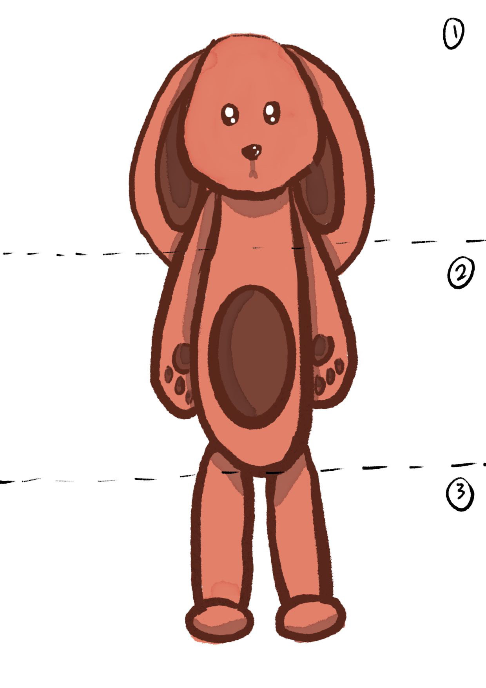
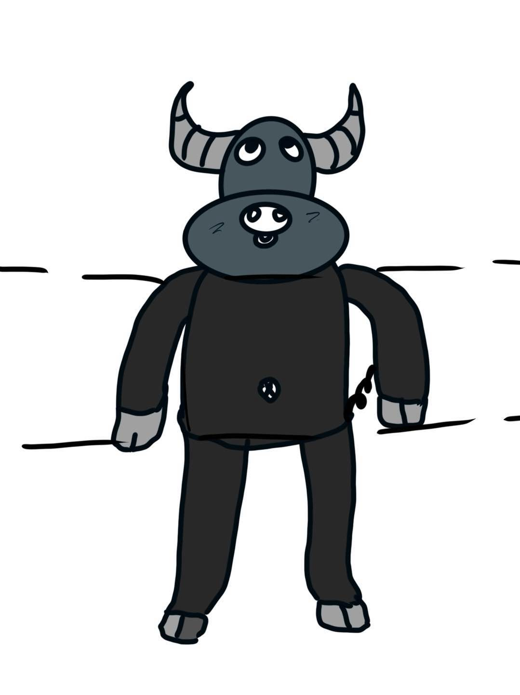
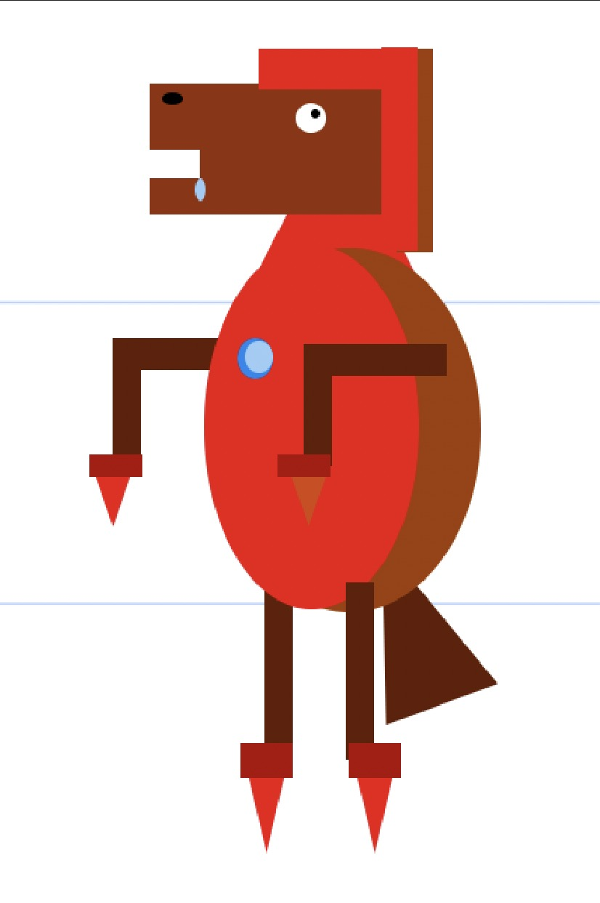

This was another partner assignment that we have to change with eachother for body parts
Characters Background:
This is Lulu, a rabbit puffy that was abandoned by its owner in an old house while they're moving out of the house. Ever since, Lulu has been feeling lonely and wishes she could go back to the past.

In the mystical Hurnwood forest, Balgrim, a once-powerful guardian with spiraled horns and three all-seeing eyes, was betrayed and cast into exile. Though stripped of most of his powers, he watches over the forest, guiding lost travelers and waiting for the day he’ll reclaim his role as protector.

The Iron Horse, a horse that accidentally went into Iron Man suit and just activated the boost on the suit for flying and just went flying and probably going to fall into pieces.

New Background story: Following my background story from before, the Iron Horse did crush into pieces and its head was protected by the iron helmet, then a mad scientist found it and combined it with other animals and made the horse bunny bull aka The HBB.